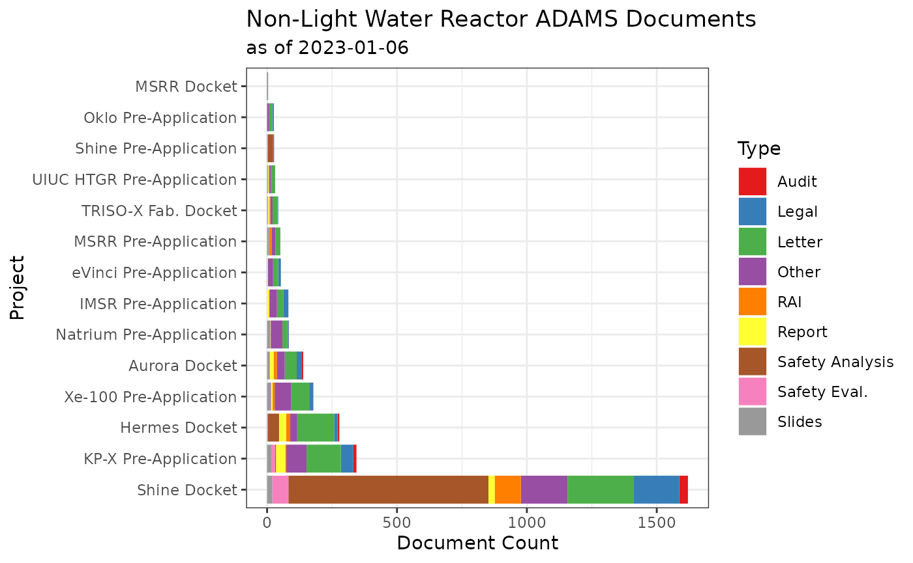
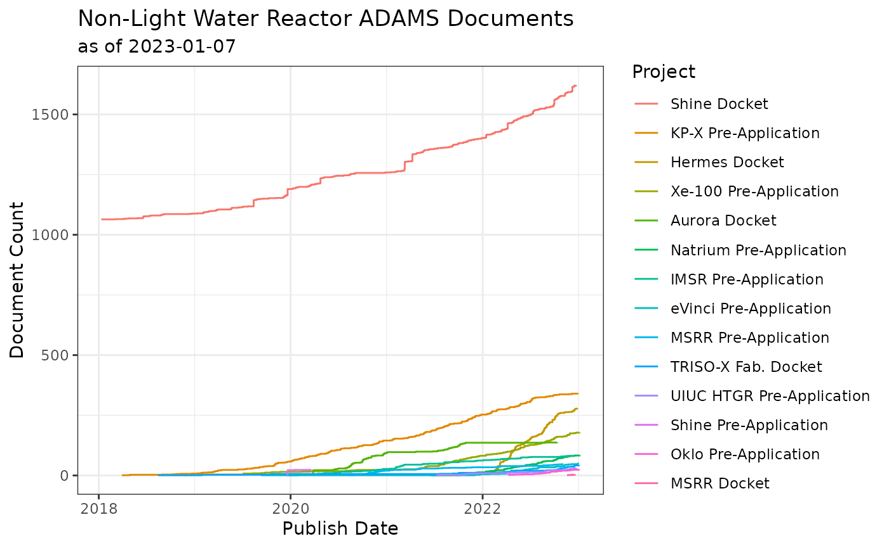
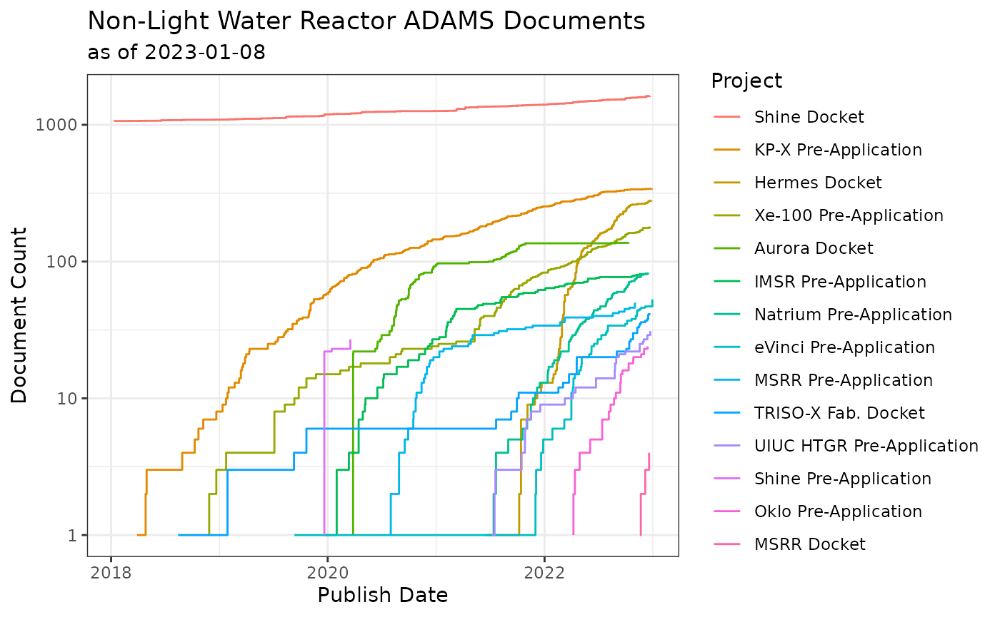

Docket Analytics and Reports
Analytics.RmdThis page provides preliminary data analytics on various NLWR dockets. Note that ADAMS assigned multiple docket numbers to some reports. The results presented here should be interpreted with these limitations.
Pulling Advanced Reactor Docket Files
Because the entire docket is being pulled for each project, the 1,000
document per search limit would be exceeded if all the dockets were
pulled in one request. To reduce the impact of this limit, the
nrcadams::search_long_docket is used to break the one long
search into many smaller searches.
combined_dockets = nrcadams::docket_codex |>
dplyr::pull(DocketNumber) |>
nrcadams::search_long_docket(number_of_intervals = 30) |>
dplyr::mutate(Title = paste0("<a href='", URL, "'>", Title, '</a>')) |>
dplyr::left_join(nrcadams::docket_codex) |>
dplyr::select(-c(URL, Company, DocketNumber))
#> Searching with the following URL:
#> https://adams.nrc.gov/wba/services/search/advanced/nrc?q=(mode:sections,sections:(filters:(public-library:!t),properties_search_any:!(!(DocketNumber,eq,'99902088',''),!(DocketNumber,eq,'05000610',''),!(DocketNumber,eq,'05000608',''),!(DocketNumber,eq,'99902034',''),!(DocketNumber,eq,'99902071',''),!(DocketNumber,eq,'07007027',''),!(DocketNumber,eq,'99902100',''),!(DocketNumber,eq,'99902094',''),!(DocketNumber,eq,'99902079',''),!(DocketNumber,eq,'99902076',''),!(DocketNumber,eq,'99900003',''),!(DocketNumber,eq,'99902049',''),!(DocketNumber,eq,'99902078',''),!(DocketNumber,eq,'99902069',''),!(DocketNumber,eq,'05007513',''),!(DocketNumber,eq,'99902095',''),!(DocketNumber,eq,'05200049','')),properties_search_all:!(!(PublishDatePARS,gt,'01/01/2013',''),!(PublishDatePARS,lt,'05/02/2013',''))))&qn=New&tab=advanced-search-pars&z=0
#> : 0.516 sec elapsed
#> Searching with the following URL:
#> https://adams.nrc.gov/wba/services/search/advanced/nrc?q=(mode:sections,sections:(filters:(public-library:!t),properties_search_any:!(!(DocketNumber,eq,'99902088',''),!(DocketNumber,eq,'05000610',''),!(DocketNumber,eq,'05000608',''),!(DocketNumber,eq,'99902034',''),!(DocketNumber,eq,'99902071',''),!(DocketNumber,eq,'07007027',''),!(DocketNumber,eq,'99902100',''),!(DocketNumber,eq,'99902094',''),!(DocketNumber,eq,'99902079',''),!(DocketNumber,eq,'99902076',''),!(DocketNumber,eq,'99900003',''),!(DocketNumber,eq,'99902049',''),!(DocketNumber,eq,'99902078',''),!(DocketNumber,eq,'99902069',''),!(DocketNumber,eq,'05007513',''),!(DocketNumber,eq,'99902095',''),!(DocketNumber,eq,'05200049','')),properties_search_all:!(!(PublishDatePARS,gt,'05/02/2013',''),!(PublishDatePARS,lt,'09/01/2013',''))))&qn=New&tab=advanced-search-pars&z=0
#> : 0.764 sec elapsed
#> Searching with the following URL:
#> https://adams.nrc.gov/wba/services/search/advanced/nrc?q=(mode:sections,sections:(filters:(public-library:!t),properties_search_any:!(!(DocketNumber,eq,'99902088',''),!(DocketNumber,eq,'05000610',''),!(DocketNumber,eq,'05000608',''),!(DocketNumber,eq,'99902034',''),!(DocketNumber,eq,'99902071',''),!(DocketNumber,eq,'07007027',''),!(DocketNumber,eq,'99902100',''),!(DocketNumber,eq,'99902094',''),!(DocketNumber,eq,'99902079',''),!(DocketNumber,eq,'99902076',''),!(DocketNumber,eq,'99900003',''),!(DocketNumber,eq,'99902049',''),!(DocketNumber,eq,'99902078',''),!(DocketNumber,eq,'99902069',''),!(DocketNumber,eq,'05007513',''),!(DocketNumber,eq,'99902095',''),!(DocketNumber,eq,'05200049','')),properties_search_all:!(!(PublishDatePARS,gt,'09/01/2013',''),!(PublishDatePARS,lt,'01/01/2014',''))))&qn=New&tab=advanced-search-pars&z=0
#> : 0.681 sec elapsed
#> Searching with the following URL:
#> https://adams.nrc.gov/wba/services/search/advanced/nrc?q=(mode:sections,sections:(filters:(public-library:!t),properties_search_any:!(!(DocketNumber,eq,'99902088',''),!(DocketNumber,eq,'05000610',''),!(DocketNumber,eq,'05000608',''),!(DocketNumber,eq,'99902034',''),!(DocketNumber,eq,'99902071',''),!(DocketNumber,eq,'07007027',''),!(DocketNumber,eq,'99902100',''),!(DocketNumber,eq,'99902094',''),!(DocketNumber,eq,'99902079',''),!(DocketNumber,eq,'99902076',''),!(DocketNumber,eq,'99900003',''),!(DocketNumber,eq,'99902049',''),!(DocketNumber,eq,'99902078',''),!(DocketNumber,eq,'99902069',''),!(DocketNumber,eq,'05007513',''),!(DocketNumber,eq,'99902095',''),!(DocketNumber,eq,'05200049','')),properties_search_all:!(!(PublishDatePARS,gt,'01/01/2014',''),!(PublishDatePARS,lt,'05/03/2014',''))))&qn=New&tab=advanced-search-pars&z=0
#> : 0.38 sec elapsed
#> Searching with the following URL:
#> https://adams.nrc.gov/wba/services/search/advanced/nrc?q=(mode:sections,sections:(filters:(public-library:!t),properties_search_any:!(!(DocketNumber,eq,'99902088',''),!(DocketNumber,eq,'05000610',''),!(DocketNumber,eq,'05000608',''),!(DocketNumber,eq,'99902034',''),!(DocketNumber,eq,'99902071',''),!(DocketNumber,eq,'07007027',''),!(DocketNumber,eq,'99902100',''),!(DocketNumber,eq,'99902094',''),!(DocketNumber,eq,'99902079',''),!(DocketNumber,eq,'99902076',''),!(DocketNumber,eq,'99900003',''),!(DocketNumber,eq,'99902049',''),!(DocketNumber,eq,'99902078',''),!(DocketNumber,eq,'99902069',''),!(DocketNumber,eq,'05007513',''),!(DocketNumber,eq,'99902095',''),!(DocketNumber,eq,'05200049','')),properties_search_all:!(!(PublishDatePARS,gt,'05/03/2014',''),!(PublishDatePARS,lt,'09/02/2014',''))))&qn=New&tab=advanced-search-pars&z=0
#> : 0.404 sec elapsed
#> Searching with the following URL:
#> https://adams.nrc.gov/wba/services/search/advanced/nrc?q=(mode:sections,sections:(filters:(public-library:!t),properties_search_any:!(!(DocketNumber,eq,'99902088',''),!(DocketNumber,eq,'05000610',''),!(DocketNumber,eq,'05000608',''),!(DocketNumber,eq,'99902034',''),!(DocketNumber,eq,'99902071',''),!(DocketNumber,eq,'07007027',''),!(DocketNumber,eq,'99902100',''),!(DocketNumber,eq,'99902094',''),!(DocketNumber,eq,'99902079',''),!(DocketNumber,eq,'99902076',''),!(DocketNumber,eq,'99900003',''),!(DocketNumber,eq,'99902049',''),!(DocketNumber,eq,'99902078',''),!(DocketNumber,eq,'99902069',''),!(DocketNumber,eq,'05007513',''),!(DocketNumber,eq,'99902095',''),!(DocketNumber,eq,'05200049','')),properties_search_all:!(!(PublishDatePARS,gt,'09/02/2014',''),!(PublishDatePARS,lt,'01/02/2015',''))))&qn=New&tab=advanced-search-pars&z=0
#> : 0.695 sec elapsed
#> Searching with the following URL:
#> https://adams.nrc.gov/wba/services/search/advanced/nrc?q=(mode:sections,sections:(filters:(public-library:!t),properties_search_any:!(!(DocketNumber,eq,'99902088',''),!(DocketNumber,eq,'05000610',''),!(DocketNumber,eq,'05000608',''),!(DocketNumber,eq,'99902034',''),!(DocketNumber,eq,'99902071',''),!(DocketNumber,eq,'07007027',''),!(DocketNumber,eq,'99902100',''),!(DocketNumber,eq,'99902094',''),!(DocketNumber,eq,'99902079',''),!(DocketNumber,eq,'99902076',''),!(DocketNumber,eq,'99900003',''),!(DocketNumber,eq,'99902049',''),!(DocketNumber,eq,'99902078',''),!(DocketNumber,eq,'99902069',''),!(DocketNumber,eq,'05007513',''),!(DocketNumber,eq,'99902095',''),!(DocketNumber,eq,'05200049','')),properties_search_all:!(!(PublishDatePARS,gt,'01/02/2015',''),!(PublishDatePARS,lt,'05/04/2015',''))))&qn=New&tab=advanced-search-pars&z=0
#> : 0.677 sec elapsed
#> Searching with the following URL:
#> https://adams.nrc.gov/wba/services/search/advanced/nrc?q=(mode:sections,sections:(filters:(public-library:!t),properties_search_any:!(!(DocketNumber,eq,'99902088',''),!(DocketNumber,eq,'05000610',''),!(DocketNumber,eq,'05000608',''),!(DocketNumber,eq,'99902034',''),!(DocketNumber,eq,'99902071',''),!(DocketNumber,eq,'07007027',''),!(DocketNumber,eq,'99902100',''),!(DocketNumber,eq,'99902094',''),!(DocketNumber,eq,'99902079',''),!(DocketNumber,eq,'99902076',''),!(DocketNumber,eq,'99900003',''),!(DocketNumber,eq,'99902049',''),!(DocketNumber,eq,'99902078',''),!(DocketNumber,eq,'99902069',''),!(DocketNumber,eq,'05007513',''),!(DocketNumber,eq,'99902095',''),!(DocketNumber,eq,'05200049','')),properties_search_all:!(!(PublishDatePARS,gt,'05/04/2015',''),!(PublishDatePARS,lt,'09/03/2015',''))))&qn=New&tab=advanced-search-pars&z=0
#> : 2.195 sec elapsed
#> Searching with the following URL:
#> https://adams.nrc.gov/wba/services/search/advanced/nrc?q=(mode:sections,sections:(filters:(public-library:!t),properties_search_any:!(!(DocketNumber,eq,'99902088',''),!(DocketNumber,eq,'05000610',''),!(DocketNumber,eq,'05000608',''),!(DocketNumber,eq,'99902034',''),!(DocketNumber,eq,'99902071',''),!(DocketNumber,eq,'07007027',''),!(DocketNumber,eq,'99902100',''),!(DocketNumber,eq,'99902094',''),!(DocketNumber,eq,'99902079',''),!(DocketNumber,eq,'99902076',''),!(DocketNumber,eq,'99900003',''),!(DocketNumber,eq,'99902049',''),!(DocketNumber,eq,'99902078',''),!(DocketNumber,eq,'99902069',''),!(DocketNumber,eq,'05007513',''),!(DocketNumber,eq,'99902095',''),!(DocketNumber,eq,'05200049','')),properties_search_all:!(!(PublishDatePARS,gt,'09/03/2015',''),!(PublishDatePARS,lt,'01/03/2016',''))))&qn=New&tab=advanced-search-pars&z=0
#> : 1.797 sec elapsed
#> Searching with the following URL:
#> https://adams.nrc.gov/wba/services/search/advanced/nrc?q=(mode:sections,sections:(filters:(public-library:!t),properties_search_any:!(!(DocketNumber,eq,'99902088',''),!(DocketNumber,eq,'05000610',''),!(DocketNumber,eq,'05000608',''),!(DocketNumber,eq,'99902034',''),!(DocketNumber,eq,'99902071',''),!(DocketNumber,eq,'07007027',''),!(DocketNumber,eq,'99902100',''),!(DocketNumber,eq,'99902094',''),!(DocketNumber,eq,'99902079',''),!(DocketNumber,eq,'99902076',''),!(DocketNumber,eq,'99900003',''),!(DocketNumber,eq,'99902049',''),!(DocketNumber,eq,'99902078',''),!(DocketNumber,eq,'99902069',''),!(DocketNumber,eq,'05007513',''),!(DocketNumber,eq,'99902095',''),!(DocketNumber,eq,'05200049','')),properties_search_all:!(!(PublishDatePARS,gt,'01/03/2016',''),!(PublishDatePARS,lt,'05/04/2016',''))))&qn=New&tab=advanced-search-pars&z=0
#> : 0.493 sec elapsed
#> Searching with the following URL:
#> https://adams.nrc.gov/wba/services/search/advanced/nrc?q=(mode:sections,sections:(filters:(public-library:!t),properties_search_any:!(!(DocketNumber,eq,'99902088',''),!(DocketNumber,eq,'05000610',''),!(DocketNumber,eq,'05000608',''),!(DocketNumber,eq,'99902034',''),!(DocketNumber,eq,'99902071',''),!(DocketNumber,eq,'07007027',''),!(DocketNumber,eq,'99902100',''),!(DocketNumber,eq,'99902094',''),!(DocketNumber,eq,'99902079',''),!(DocketNumber,eq,'99902076',''),!(DocketNumber,eq,'99900003',''),!(DocketNumber,eq,'99902049',''),!(DocketNumber,eq,'99902078',''),!(DocketNumber,eq,'99902069',''),!(DocketNumber,eq,'05007513',''),!(DocketNumber,eq,'99902095',''),!(DocketNumber,eq,'05200049','')),properties_search_all:!(!(PublishDatePARS,gt,'05/04/2016',''),!(PublishDatePARS,lt,'09/03/2016',''))))&qn=New&tab=advanced-search-pars&z=0
#> : 0.373 sec elapsed
#> Searching with the following URL:
#> https://adams.nrc.gov/wba/services/search/advanced/nrc?q=(mode:sections,sections:(filters:(public-library:!t),properties_search_any:!(!(DocketNumber,eq,'99902088',''),!(DocketNumber,eq,'05000610',''),!(DocketNumber,eq,'05000608',''),!(DocketNumber,eq,'99902034',''),!(DocketNumber,eq,'99902071',''),!(DocketNumber,eq,'07007027',''),!(DocketNumber,eq,'99902100',''),!(DocketNumber,eq,'99902094',''),!(DocketNumber,eq,'99902079',''),!(DocketNumber,eq,'99902076',''),!(DocketNumber,eq,'99900003',''),!(DocketNumber,eq,'99902049',''),!(DocketNumber,eq,'99902078',''),!(DocketNumber,eq,'99902069',''),!(DocketNumber,eq,'05007513',''),!(DocketNumber,eq,'99902095',''),!(DocketNumber,eq,'05200049','')),properties_search_all:!(!(PublishDatePARS,gt,'09/03/2016',''),!(PublishDatePARS,lt,'01/03/2017',''))))&qn=New&tab=advanced-search-pars&z=0
#> : 0.38 sec elapsed
#> Searching with the following URL:
#> https://adams.nrc.gov/wba/services/search/advanced/nrc?q=(mode:sections,sections:(filters:(public-library:!t),properties_search_any:!(!(DocketNumber,eq,'99902088',''),!(DocketNumber,eq,'05000610',''),!(DocketNumber,eq,'05000608',''),!(DocketNumber,eq,'99902034',''),!(DocketNumber,eq,'99902071',''),!(DocketNumber,eq,'07007027',''),!(DocketNumber,eq,'99902100',''),!(DocketNumber,eq,'99902094',''),!(DocketNumber,eq,'99902079',''),!(DocketNumber,eq,'99902076',''),!(DocketNumber,eq,'99900003',''),!(DocketNumber,eq,'99902049',''),!(DocketNumber,eq,'99902078',''),!(DocketNumber,eq,'99902069',''),!(DocketNumber,eq,'05007513',''),!(DocketNumber,eq,'99902095',''),!(DocketNumber,eq,'05200049','')),properties_search_all:!(!(PublishDatePARS,gt,'01/03/2017',''),!(PublishDatePARS,lt,'05/05/2017',''))))&qn=New&tab=advanced-search-pars&z=0
#> : 0.44 sec elapsed
#> Searching with the following URL:
#> https://adams.nrc.gov/wba/services/search/advanced/nrc?q=(mode:sections,sections:(filters:(public-library:!t),properties_search_any:!(!(DocketNumber,eq,'99902088',''),!(DocketNumber,eq,'05000610',''),!(DocketNumber,eq,'05000608',''),!(DocketNumber,eq,'99902034',''),!(DocketNumber,eq,'99902071',''),!(DocketNumber,eq,'07007027',''),!(DocketNumber,eq,'99902100',''),!(DocketNumber,eq,'99902094',''),!(DocketNumber,eq,'99902079',''),!(DocketNumber,eq,'99902076',''),!(DocketNumber,eq,'99900003',''),!(DocketNumber,eq,'99902049',''),!(DocketNumber,eq,'99902078',''),!(DocketNumber,eq,'99902069',''),!(DocketNumber,eq,'05007513',''),!(DocketNumber,eq,'99902095',''),!(DocketNumber,eq,'05200049','')),properties_search_all:!(!(PublishDatePARS,gt,'05/05/2017',''),!(PublishDatePARS,lt,'09/04/2017',''))))&qn=New&tab=advanced-search-pars&z=0
#> : 0.368 sec elapsed
#> Searching with the following URL:
#> https://adams.nrc.gov/wba/services/search/advanced/nrc?q=(mode:sections,sections:(filters:(public-library:!t),properties_search_any:!(!(DocketNumber,eq,'99902088',''),!(DocketNumber,eq,'05000610',''),!(DocketNumber,eq,'05000608',''),!(DocketNumber,eq,'99902034',''),!(DocketNumber,eq,'99902071',''),!(DocketNumber,eq,'07007027',''),!(DocketNumber,eq,'99902100',''),!(DocketNumber,eq,'99902094',''),!(DocketNumber,eq,'99902079',''),!(DocketNumber,eq,'99902076',''),!(DocketNumber,eq,'99900003',''),!(DocketNumber,eq,'99902049',''),!(DocketNumber,eq,'99902078',''),!(DocketNumber,eq,'99902069',''),!(DocketNumber,eq,'05007513',''),!(DocketNumber,eq,'99902095',''),!(DocketNumber,eq,'05200049','')),properties_search_all:!(!(PublishDatePARS,gt,'09/04/2017',''),!(PublishDatePARS,lt,'01/04/2018',''))))&qn=New&tab=advanced-search-pars&z=0
#> : 0.297 sec elapsed
#> Searching with the following URL:
#> https://adams.nrc.gov/wba/services/search/advanced/nrc?q=(mode:sections,sections:(filters:(public-library:!t),properties_search_any:!(!(DocketNumber,eq,'99902088',''),!(DocketNumber,eq,'05000610',''),!(DocketNumber,eq,'05000608',''),!(DocketNumber,eq,'99902034',''),!(DocketNumber,eq,'99902071',''),!(DocketNumber,eq,'07007027',''),!(DocketNumber,eq,'99902100',''),!(DocketNumber,eq,'99902094',''),!(DocketNumber,eq,'99902079',''),!(DocketNumber,eq,'99902076',''),!(DocketNumber,eq,'99900003',''),!(DocketNumber,eq,'99902049',''),!(DocketNumber,eq,'99902078',''),!(DocketNumber,eq,'99902069',''),!(DocketNumber,eq,'05007513',''),!(DocketNumber,eq,'99902095',''),!(DocketNumber,eq,'05200049','')),properties_search_all:!(!(PublishDatePARS,gt,'01/04/2018',''),!(PublishDatePARS,lt,'05/05/2018',''))))&qn=New&tab=advanced-search-pars&z=0
#> : 0.367 sec elapsed
#> Searching with the following URL:
#> https://adams.nrc.gov/wba/services/search/advanced/nrc?q=(mode:sections,sections:(filters:(public-library:!t),properties_search_any:!(!(DocketNumber,eq,'99902088',''),!(DocketNumber,eq,'05000610',''),!(DocketNumber,eq,'05000608',''),!(DocketNumber,eq,'99902034',''),!(DocketNumber,eq,'99902071',''),!(DocketNumber,eq,'07007027',''),!(DocketNumber,eq,'99902100',''),!(DocketNumber,eq,'99902094',''),!(DocketNumber,eq,'99902079',''),!(DocketNumber,eq,'99902076',''),!(DocketNumber,eq,'99900003',''),!(DocketNumber,eq,'99902049',''),!(DocketNumber,eq,'99902078',''),!(DocketNumber,eq,'99902069',''),!(DocketNumber,eq,'05007513',''),!(DocketNumber,eq,'99902095',''),!(DocketNumber,eq,'05200049','')),properties_search_all:!(!(PublishDatePARS,gt,'05/05/2018',''),!(PublishDatePARS,lt,'09/04/2018',''))))&qn=New&tab=advanced-search-pars&z=0
#> : 0.496 sec elapsed
#> Searching with the following URL:
#> https://adams.nrc.gov/wba/services/search/advanced/nrc?q=(mode:sections,sections:(filters:(public-library:!t),properties_search_any:!(!(DocketNumber,eq,'99902088',''),!(DocketNumber,eq,'05000610',''),!(DocketNumber,eq,'05000608',''),!(DocketNumber,eq,'99902034',''),!(DocketNumber,eq,'99902071',''),!(DocketNumber,eq,'07007027',''),!(DocketNumber,eq,'99902100',''),!(DocketNumber,eq,'99902094',''),!(DocketNumber,eq,'99902079',''),!(DocketNumber,eq,'99902076',''),!(DocketNumber,eq,'99900003',''),!(DocketNumber,eq,'99902049',''),!(DocketNumber,eq,'99902078',''),!(DocketNumber,eq,'99902069',''),!(DocketNumber,eq,'05007513',''),!(DocketNumber,eq,'99902095',''),!(DocketNumber,eq,'05200049','')),properties_search_all:!(!(PublishDatePARS,gt,'09/04/2018',''),!(PublishDatePARS,lt,'01/04/2019',''))))&qn=New&tab=advanced-search-pars&z=0
#> : 0.448 sec elapsed
#> Searching with the following URL:
#> https://adams.nrc.gov/wba/services/search/advanced/nrc?q=(mode:sections,sections:(filters:(public-library:!t),properties_search_any:!(!(DocketNumber,eq,'99902088',''),!(DocketNumber,eq,'05000610',''),!(DocketNumber,eq,'05000608',''),!(DocketNumber,eq,'99902034',''),!(DocketNumber,eq,'99902071',''),!(DocketNumber,eq,'07007027',''),!(DocketNumber,eq,'99902100',''),!(DocketNumber,eq,'99902094',''),!(DocketNumber,eq,'99902079',''),!(DocketNumber,eq,'99902076',''),!(DocketNumber,eq,'99900003',''),!(DocketNumber,eq,'99902049',''),!(DocketNumber,eq,'99902078',''),!(DocketNumber,eq,'99902069',''),!(DocketNumber,eq,'05007513',''),!(DocketNumber,eq,'99902095',''),!(DocketNumber,eq,'05200049','')),properties_search_all:!(!(PublishDatePARS,gt,'01/04/2019',''),!(PublishDatePARS,lt,'05/06/2019',''))))&qn=New&tab=advanced-search-pars&z=0
#> : 0.561 sec elapsed
#> Searching with the following URL:
#> https://adams.nrc.gov/wba/services/search/advanced/nrc?q=(mode:sections,sections:(filters:(public-library:!t),properties_search_any:!(!(DocketNumber,eq,'99902088',''),!(DocketNumber,eq,'05000610',''),!(DocketNumber,eq,'05000608',''),!(DocketNumber,eq,'99902034',''),!(DocketNumber,eq,'99902071',''),!(DocketNumber,eq,'07007027',''),!(DocketNumber,eq,'99902100',''),!(DocketNumber,eq,'99902094',''),!(DocketNumber,eq,'99902079',''),!(DocketNumber,eq,'99902076',''),!(DocketNumber,eq,'99900003',''),!(DocketNumber,eq,'99902049',''),!(DocketNumber,eq,'99902078',''),!(DocketNumber,eq,'99902069',''),!(DocketNumber,eq,'05007513',''),!(DocketNumber,eq,'99902095',''),!(DocketNumber,eq,'05200049','')),properties_search_all:!(!(PublishDatePARS,gt,'05/06/2019',''),!(PublishDatePARS,lt,'09/05/2019',''))))&qn=New&tab=advanced-search-pars&z=0
#> : 0.631 sec elapsed
#> Searching with the following URL:
#> https://adams.nrc.gov/wba/services/search/advanced/nrc?q=(mode:sections,sections:(filters:(public-library:!t),properties_search_any:!(!(DocketNumber,eq,'99902088',''),!(DocketNumber,eq,'05000610',''),!(DocketNumber,eq,'05000608',''),!(DocketNumber,eq,'99902034',''),!(DocketNumber,eq,'99902071',''),!(DocketNumber,eq,'07007027',''),!(DocketNumber,eq,'99902100',''),!(DocketNumber,eq,'99902094',''),!(DocketNumber,eq,'99902079',''),!(DocketNumber,eq,'99902076',''),!(DocketNumber,eq,'99900003',''),!(DocketNumber,eq,'99902049',''),!(DocketNumber,eq,'99902078',''),!(DocketNumber,eq,'99902069',''),!(DocketNumber,eq,'05007513',''),!(DocketNumber,eq,'99902095',''),!(DocketNumber,eq,'05200049','')),properties_search_all:!(!(PublishDatePARS,gt,'09/05/2019',''),!(PublishDatePARS,lt,'01/05/2020',''))))&qn=New&tab=advanced-search-pars&z=0
#> : 0.74 sec elapsed
#> Searching with the following URL:
#> https://adams.nrc.gov/wba/services/search/advanced/nrc?q=(mode:sections,sections:(filters:(public-library:!t),properties_search_any:!(!(DocketNumber,eq,'99902088',''),!(DocketNumber,eq,'05000610',''),!(DocketNumber,eq,'05000608',''),!(DocketNumber,eq,'99902034',''),!(DocketNumber,eq,'99902071',''),!(DocketNumber,eq,'07007027',''),!(DocketNumber,eq,'99902100',''),!(DocketNumber,eq,'99902094',''),!(DocketNumber,eq,'99902079',''),!(DocketNumber,eq,'99902076',''),!(DocketNumber,eq,'99900003',''),!(DocketNumber,eq,'99902049',''),!(DocketNumber,eq,'99902078',''),!(DocketNumber,eq,'99902069',''),!(DocketNumber,eq,'05007513',''),!(DocketNumber,eq,'99902095',''),!(DocketNumber,eq,'05200049','')),properties_search_all:!(!(PublishDatePARS,gt,'01/05/2020',''),!(PublishDatePARS,lt,'05/06/2020',''))))&qn=New&tab=advanced-search-pars&z=0
#> : 0.9 sec elapsed
#> Searching with the following URL:
#> https://adams.nrc.gov/wba/services/search/advanced/nrc?q=(mode:sections,sections:(filters:(public-library:!t),properties_search_any:!(!(DocketNumber,eq,'99902088',''),!(DocketNumber,eq,'05000610',''),!(DocketNumber,eq,'05000608',''),!(DocketNumber,eq,'99902034',''),!(DocketNumber,eq,'99902071',''),!(DocketNumber,eq,'07007027',''),!(DocketNumber,eq,'99902100',''),!(DocketNumber,eq,'99902094',''),!(DocketNumber,eq,'99902079',''),!(DocketNumber,eq,'99902076',''),!(DocketNumber,eq,'99900003',''),!(DocketNumber,eq,'99902049',''),!(DocketNumber,eq,'99902078',''),!(DocketNumber,eq,'99902069',''),!(DocketNumber,eq,'05007513',''),!(DocketNumber,eq,'99902095',''),!(DocketNumber,eq,'05200049','')),properties_search_all:!(!(PublishDatePARS,gt,'05/06/2020',''),!(PublishDatePARS,lt,'09/05/2020',''))))&qn=New&tab=advanced-search-pars&z=0
#> : 0.889 sec elapsed
#> Searching with the following URL:
#> https://adams.nrc.gov/wba/services/search/advanced/nrc?q=(mode:sections,sections:(filters:(public-library:!t),properties_search_any:!(!(DocketNumber,eq,'99902088',''),!(DocketNumber,eq,'05000610',''),!(DocketNumber,eq,'05000608',''),!(DocketNumber,eq,'99902034',''),!(DocketNumber,eq,'99902071',''),!(DocketNumber,eq,'07007027',''),!(DocketNumber,eq,'99902100',''),!(DocketNumber,eq,'99902094',''),!(DocketNumber,eq,'99902079',''),!(DocketNumber,eq,'99902076',''),!(DocketNumber,eq,'99900003',''),!(DocketNumber,eq,'99902049',''),!(DocketNumber,eq,'99902078',''),!(DocketNumber,eq,'99902069',''),!(DocketNumber,eq,'05007513',''),!(DocketNumber,eq,'99902095',''),!(DocketNumber,eq,'05200049','')),properties_search_all:!(!(PublishDatePARS,gt,'09/05/2020',''),!(PublishDatePARS,lt,'01/05/2021',''))))&qn=New&tab=advanced-search-pars&z=0
#> : 1.168 sec elapsed
#> Searching with the following URL:
#> https://adams.nrc.gov/wba/services/search/advanced/nrc?q=(mode:sections,sections:(filters:(public-library:!t),properties_search_any:!(!(DocketNumber,eq,'99902088',''),!(DocketNumber,eq,'05000610',''),!(DocketNumber,eq,'05000608',''),!(DocketNumber,eq,'99902034',''),!(DocketNumber,eq,'99902071',''),!(DocketNumber,eq,'07007027',''),!(DocketNumber,eq,'99902100',''),!(DocketNumber,eq,'99902094',''),!(DocketNumber,eq,'99902079',''),!(DocketNumber,eq,'99902076',''),!(DocketNumber,eq,'99900003',''),!(DocketNumber,eq,'99902049',''),!(DocketNumber,eq,'99902078',''),!(DocketNumber,eq,'99902069',''),!(DocketNumber,eq,'05007513',''),!(DocketNumber,eq,'99902095',''),!(DocketNumber,eq,'05200049','')),properties_search_all:!(!(PublishDatePARS,gt,'01/05/2021',''),!(PublishDatePARS,lt,'05/07/2021',''))))&qn=New&tab=advanced-search-pars&z=0
#> : 1.284 sec elapsed
#> Searching with the following URL:
#> https://adams.nrc.gov/wba/services/search/advanced/nrc?q=(mode:sections,sections:(filters:(public-library:!t),properties_search_any:!(!(DocketNumber,eq,'99902088',''),!(DocketNumber,eq,'05000610',''),!(DocketNumber,eq,'05000608',''),!(DocketNumber,eq,'99902034',''),!(DocketNumber,eq,'99902071',''),!(DocketNumber,eq,'07007027',''),!(DocketNumber,eq,'99902100',''),!(DocketNumber,eq,'99902094',''),!(DocketNumber,eq,'99902079',''),!(DocketNumber,eq,'99902076',''),!(DocketNumber,eq,'99900003',''),!(DocketNumber,eq,'99902049',''),!(DocketNumber,eq,'99902078',''),!(DocketNumber,eq,'99902069',''),!(DocketNumber,eq,'05007513',''),!(DocketNumber,eq,'99902095',''),!(DocketNumber,eq,'05200049','')),properties_search_all:!(!(PublishDatePARS,gt,'05/07/2021',''),!(PublishDatePARS,lt,'09/06/2021',''))))&qn=New&tab=advanced-search-pars&z=0
#> : 1.254 sec elapsed
#> Searching with the following URL:
#> https://adams.nrc.gov/wba/services/search/advanced/nrc?q=(mode:sections,sections:(filters:(public-library:!t),properties_search_any:!(!(DocketNumber,eq,'99902088',''),!(DocketNumber,eq,'05000610',''),!(DocketNumber,eq,'05000608',''),!(DocketNumber,eq,'99902034',''),!(DocketNumber,eq,'99902071',''),!(DocketNumber,eq,'07007027',''),!(DocketNumber,eq,'99902100',''),!(DocketNumber,eq,'99902094',''),!(DocketNumber,eq,'99902079',''),!(DocketNumber,eq,'99902076',''),!(DocketNumber,eq,'99900003',''),!(DocketNumber,eq,'99902049',''),!(DocketNumber,eq,'99902078',''),!(DocketNumber,eq,'99902069',''),!(DocketNumber,eq,'05007513',''),!(DocketNumber,eq,'99902095',''),!(DocketNumber,eq,'05200049','')),properties_search_all:!(!(PublishDatePARS,gt,'09/06/2021',''),!(PublishDatePARS,lt,'01/06/2022',''))))&qn=New&tab=advanced-search-pars&z=0
#> : 1.732 sec elapsed
#> Searching with the following URL:
#> https://adams.nrc.gov/wba/services/search/advanced/nrc?q=(mode:sections,sections:(filters:(public-library:!t),properties_search_any:!(!(DocketNumber,eq,'99902088',''),!(DocketNumber,eq,'05000610',''),!(DocketNumber,eq,'05000608',''),!(DocketNumber,eq,'99902034',''),!(DocketNumber,eq,'99902071',''),!(DocketNumber,eq,'07007027',''),!(DocketNumber,eq,'99902100',''),!(DocketNumber,eq,'99902094',''),!(DocketNumber,eq,'99902079',''),!(DocketNumber,eq,'99902076',''),!(DocketNumber,eq,'99900003',''),!(DocketNumber,eq,'99902049',''),!(DocketNumber,eq,'99902078',''),!(DocketNumber,eq,'99902069',''),!(DocketNumber,eq,'05007513',''),!(DocketNumber,eq,'99902095',''),!(DocketNumber,eq,'05200049','')),properties_search_all:!(!(PublishDatePARS,gt,'01/06/2022',''),!(PublishDatePARS,lt,'05/08/2022',''))))&qn=New&tab=advanced-search-pars&z=0
#> : 3.01 sec elapsed
#> Searching with the following URL:
#> https://adams.nrc.gov/wba/services/search/advanced/nrc?q=(mode:sections,sections:(filters:(public-library:!t),properties_search_any:!(!(DocketNumber,eq,'99902088',''),!(DocketNumber,eq,'05000610',''),!(DocketNumber,eq,'05000608',''),!(DocketNumber,eq,'99902034',''),!(DocketNumber,eq,'99902071',''),!(DocketNumber,eq,'07007027',''),!(DocketNumber,eq,'99902100',''),!(DocketNumber,eq,'99902094',''),!(DocketNumber,eq,'99902079',''),!(DocketNumber,eq,'99902076',''),!(DocketNumber,eq,'99900003',''),!(DocketNumber,eq,'99902049',''),!(DocketNumber,eq,'99902078',''),!(DocketNumber,eq,'99902069',''),!(DocketNumber,eq,'05007513',''),!(DocketNumber,eq,'99902095',''),!(DocketNumber,eq,'05200049','')),properties_search_all:!(!(PublishDatePARS,gt,'05/08/2022',''),!(PublishDatePARS,lt,'09/07/2022',''))))&qn=New&tab=advanced-search-pars&z=0
#> : 2.146 sec elapsed
#> Searching with the following URL:
#> https://adams.nrc.gov/wba/services/search/advanced/nrc?q=(mode:sections,sections:(filters:(public-library:!t),properties_search_any:!(!(DocketNumber,eq,'99902088',''),!(DocketNumber,eq,'05000610',''),!(DocketNumber,eq,'05000608',''),!(DocketNumber,eq,'99902034',''),!(DocketNumber,eq,'99902071',''),!(DocketNumber,eq,'07007027',''),!(DocketNumber,eq,'99902100',''),!(DocketNumber,eq,'99902094',''),!(DocketNumber,eq,'99902079',''),!(DocketNumber,eq,'99902076',''),!(DocketNumber,eq,'99900003',''),!(DocketNumber,eq,'99902049',''),!(DocketNumber,eq,'99902078',''),!(DocketNumber,eq,'99902069',''),!(DocketNumber,eq,'05007513',''),!(DocketNumber,eq,'99902095',''),!(DocketNumber,eq,'05200049','')),properties_search_all:!(!(PublishDatePARS,gt,'09/07/2022',''))))&qn=New&tab=advanced-search-pars&z=0
#> : 3.808 sec elapsed
docket_count = combined_dockets |>
dplyr::filter(NLWR) |>
dplyr::select(-NLWR) |>
dplyr::count(Project, sort = TRUE)
docket_count |>
DT::datatable()There are too many document types coded by ADAMS to effectively show on a plot (i.e., > 180). As a result, the Type field is binned to facilitate a bar plot of various reactor applications. The Shine application bar plot is topped out at the ADAMS maximum of 1,000 documents. The last update to this plot was at 2023-01-07 18:30:56.
library(ggplot2)
combined_dockets |>
dplyr::filter(NLWR) |>
dplyr::mutate(
Project = factor(Project, levels = docket_count |> dplyr::pull(Project)),
Type = dplyr::case_when(
Type |> stringr::str_detect("RAI") ~ "RAI",
Type |> stringr::str_detect("SAR") ~ "Safety Analysis",
Type |> stringr::str_detect("Safety Analysis") ~ "Safety Analysis",
Type |> stringr::str_detect("SER") ~ "Safety Eval.",
Type |> stringr::str_detect("Safety Evaluation") ~ "Safety Eval.",
Type |> stringr::str_detect("Audit") ~ "Audit",
Type |> stringr::str_detect("Legal") ~ "Legal",
Type |> stringr::str_detect("Letter") ~ "Letter",
Type |> stringr::str_detect("E-Mail") ~ "Letter",
Type |> stringr::str_detect("Report") ~ "Report",
Type |> stringr::str_detect("Slides") ~ "Slides",
TRUE ~ "Other"
)
) |>
ggplot() +
geom_bar(aes(y = Project, fill = Type)) +
scale_fill_brewer(palette="Set1") +
theme_bw() +
labs(
title = "Non-Light Water Reactor ADAMS Documents",
subtitle = paste("as of", Sys.Date())
) +
xlab("Document Count")
The cumulative number of documents on a given ADAMS docket is also presented as a function of document date. The plot below shows the number of documents submitted to a docket. This plot starts in 2018 because the Shine docket singularly dominates the plot in the pre-2018 time frame. Plot order is sorted from highest number of documents, Shine Docket to lowest number of documents, MSRR Docket.
library(ggplot2)
grouped_NLWR_dockets = combined_dockets |>
dplyr::filter(NLWR) |>
dplyr::group_by(Project) |>
dplyr::arrange(`Publish Date`) |>
dplyr::mutate(
Project = factor(Project, levels = docket_count |> dplyr::pull(Project)),
count = 1,
`Document Count` = cumsum(count)
) |>
dplyr::filter(`Document Date` > lubridate::ymd("2018-01-01"))
plt = grouped_NLWR_dockets |>
ggplot() +
geom_step(aes(x = `Publish Date`, y = `Document Count`, color = Project)) +
theme_bw() +
labs(
title = "Non-Light Water Reactor ADAMS Documents",
subtitle = paste("as of", Sys.Date())
)The data in linear scale:
plt The data in a y axis semi log scale:
plt + scale_y_log10()
Reports
This section is updated once a day and presents the Topical Reports, Technical Reports, Environmental Reports, and Safety Evaluations available on new reactor dockets. The last update was at 2023-01-07 18:30:59. The following dockets are searched:
- MSRR Pre-Application
- MSRR Docket
- Shine Docket
- Shine Pre-Application
- Xe-100 Pre-Application
- TRISO-X Fab. Docket
- Natrium Pre-Application
- UIUC HTGR Pre-Application
- eVinci Pre-Application
- IMSR Pre-Application
- BWRX-300 Pre-Application
- SMR-160 Pre-Application
- NuScale NPM Pre-Application
- KP-X Pre-Application
- Hermes Docket
- Oklo Pre-Application
- Aurora Docket
Topical Reports
The following table summarizes tagged Topical Reports.
Topicals = combined_dockets |>
dplyr::filter(
stringr::str_detect(Type, "Topical Report"),
!stringr::str_detect(Type, "Letter"),
!stringr::str_detect(Type, "E-Mail"),
!stringr::str_detect(Type, "Administrative"),
!stringr::str_detect(Type, "Briefing"),
!stringr::str_detect(Type, "RAI"),
!stringr::str_detect(Type, "Meeting"),
!stringr::str_detect(Type, "Evaluation"),
!stringr::str_detect(Title, "Questions"),
!stringr::str_detect(Title, "Form 896")
)
Topicals |>
DT::datatable(
caption = "Topical Reports",
filter = list(position = 'top', clear = TRUE, plain = FALSE),
escape = FALSE
)Technical Paper
The following table summarizes tagged Technical Reports.
Technicals = combined_dockets |>
dplyr::filter(
stringr::str_detect(Type, "Technical Paper"),
!stringr::str_detect(Type, "Letter"),
!stringr::str_detect(Type, "E-Mail"),
!stringr::str_detect(Type, "Meeting"),
!stringr::str_detect(Title, "Cover Letter")
)
Technicals |>
DT::datatable(
caption = "Technical Paper",
filter = list(position = 'top', clear = TRUE, plain = FALSE),
escape = FALSE
)Environmental Reports
The following table summarizes tagged Environmental Reports.
Environmental = combined_dockets |>
dplyr::filter(
stringr::str_detect(Type, "Environmental"),
!stringr::str_detect(Type, "Letter"),
!stringr::str_detect(Type, "E-Mail"),
!stringr::str_detect(Type, "Meeting"),
!stringr::str_detect(Title, "Cover Letter"),
!stringr::str_detect(Title, "Question"),
!stringr::str_detect(Title, "Request"),
!stringr::str_detect(Title, "Response")
)
Environmental |>
DT::datatable(
caption = "Environmental Reports",
filter = list(position = 'top', clear = TRUE, plain = FALSE),
escape = FALSE
)Safety Analysis Reports
The following table summarizes tagged Safety Analysis Reports.
Safety_Analysis = combined_dockets |>
dplyr::filter(
stringr::str_detect(Type, "Safety Analysis"),
!stringr::str_detect(Type, "Letter"),
!stringr::str_detect(Type, "E-Mail"),
!stringr::str_detect(Type, "Meeting"),
!stringr::str_detect(Title, "Cover Letter"),
!stringr::str_detect(Title, "Question"),
!stringr::str_detect(Title, "Request"),
!stringr::str_detect(Title, "Response")
)
Safety_Analysis |>
DT::datatable(
caption = "Safety Analysis Documents",
filter = list(position = 'top', clear = TRUE, plain = FALSE),
escape = FALSE
)Safety Evaluations Reports
The following table summarizes tagged Safety Evaluations Reports.
Safety_Evaluation = combined_dockets |>
dplyr::filter(
stringr::str_detect(Type, "Safety Evaluation"),
!stringr::str_detect(Type, "Letter"),
!stringr::str_detect(Type, "E-Mail"),
!stringr::str_detect(Type, "Meeting"),
!stringr::str_detect(Title, "Cover Letter"),
!stringr::str_detect(Title, "Question"),
!stringr::str_detect(Title, "Request"),
!stringr::str_detect(Title, "Response")
)
Safety_Evaluation |>
DT::datatable(
caption = "Safety Evaluation Documents",
filter = list(position = 'top', clear = TRUE, plain = FALSE),
escape = FALSE
)